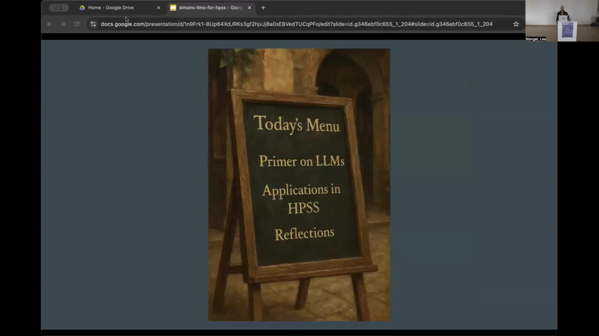
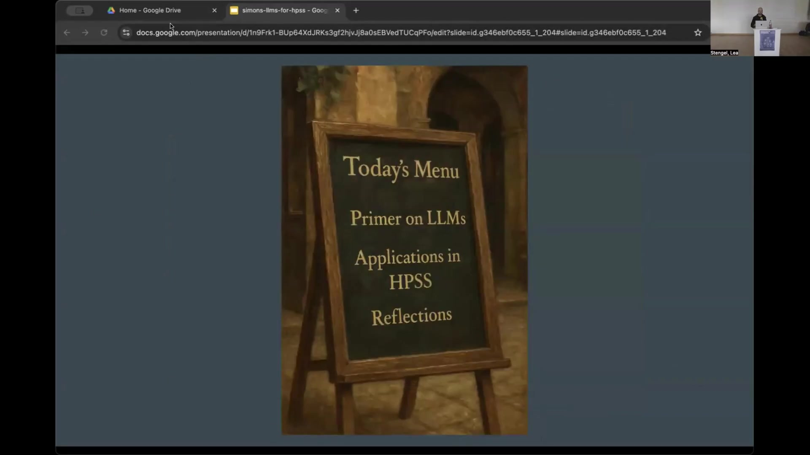
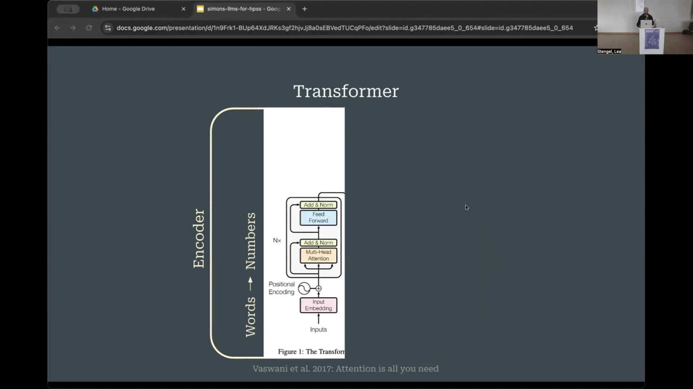
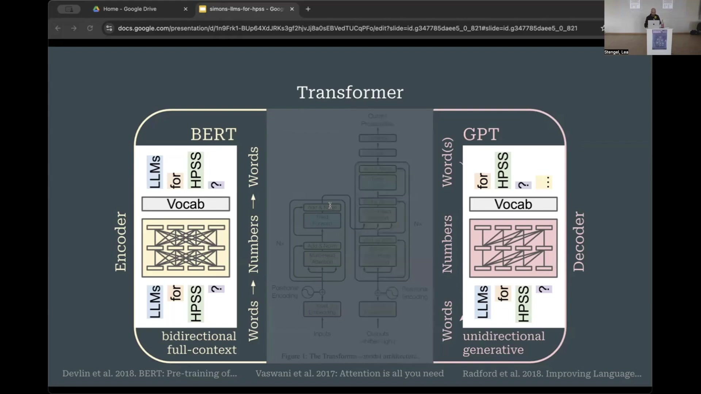
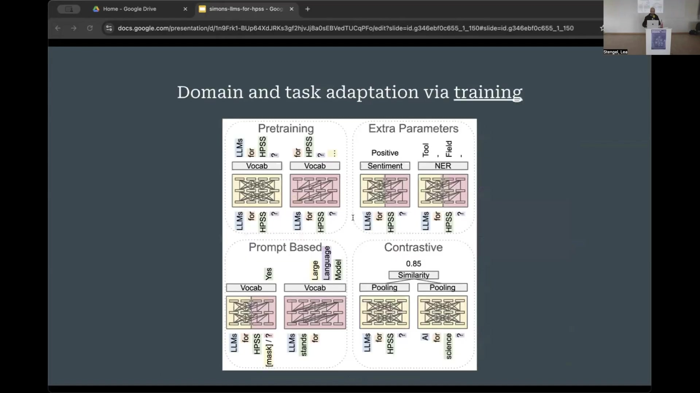
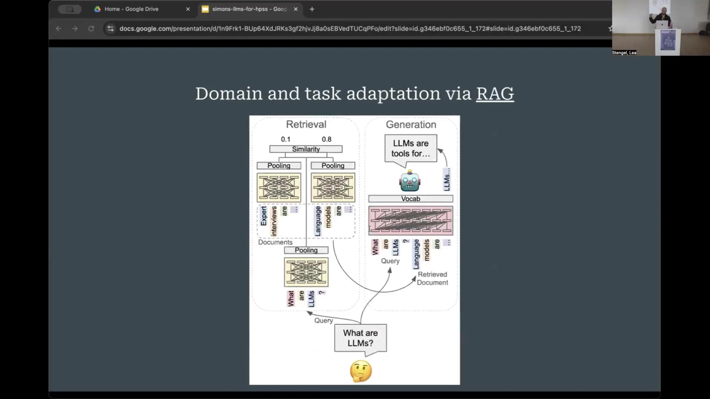
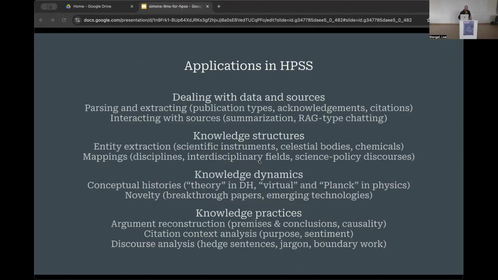
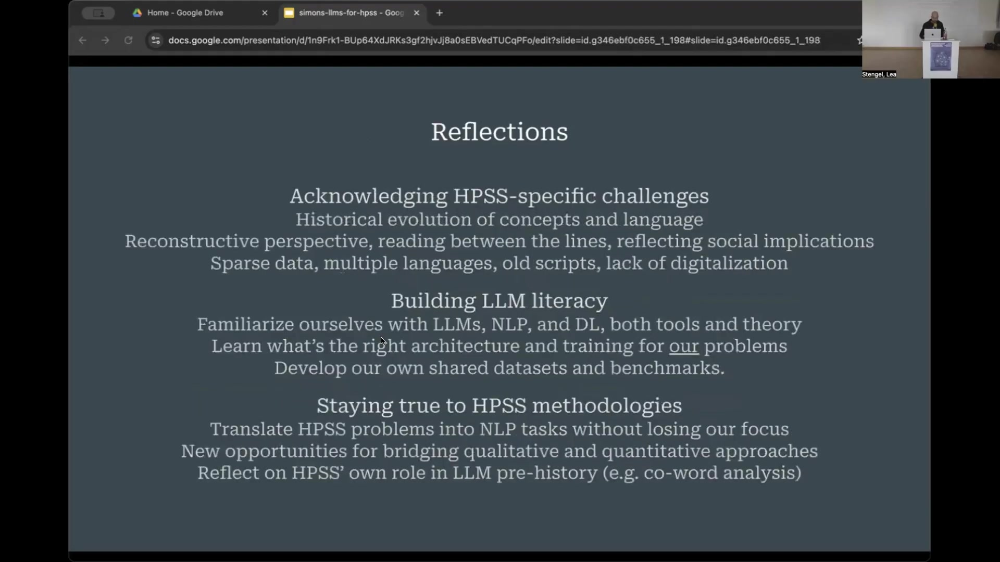

3 The Transformer’s Legacy: Understanding Large Language Models and their Application in HPSS Research
Overview
This chapter navigates the evolving landscape of Large Language Models (LLMs), commencing with a foundational primer on their core architecture. It then explores their diverse applications within History and Philosophy of Science and Science Studies (HPSS), considering various adaptation strategies. Finally, the chapter offers critical reflections on the specific challenges and opportunities these powerful tools present for HPSS research, emphasising the need for methodological rigour and LLM literacy. The discussion aims to equip readers with a nuanced understanding of LLMs, fostering informed engagement with these transformative technologies.

3.1 A Primer on Large Language Models
The journey into contemporary Large Language Models invariably begins with the Transformer architecture, a pivotal development that underpins nearly all modern LLMs. Researchers at Google Brain introduced this model in 2017, initially for machine translation tasks, such as converting German text to English (Vaswani2017?).

The Transformer comprises two primary interconnected streams: an encoder and a decoder. In its original translation application, the encoder processes the input sentence (e.g., in German), converting words into numerical representations. These numbers undergo several layers of processing—or ‘crunching’—where contextualised word embeddings become progressively more refined layer by layer. Subsequently, these numerical representations transfer to the decoder stream. The decoder then generates the output sentence (e.g., in English) word by word. Each generated word feeds back into the decoder, influencing the prediction of subsequent words until the complete translated sentence emerges.
A crucial distinction exists between the operational modes of the encoder and decoder. The encoder reads the entire input sentence simultaneously, allowing each word to interact with every other word in the sentence. This mechanism enables the model to construct a comprehensive representation of the sentence’s complete meaning, capturing what is often termed “bidirectional full-context”. Conversely, the decoder operates sequentially; when generating an English word, it can only consider the words previously generated in that sentence. It cannot ‘look into the future’ because its fundamental task is to predict the next word based on the preceding context.
3.1.1 Evolution into Pre-trained Language Models
Shortly after Vaswani and colleagues published their seminal paper (Vaswani2017?), researchers began re-engineering the encoder and decoder streams individually. This work led to the development of pre-trained language models (PLMs). These PLMs represent a shift away from translation per se, towards models possessing a profound general understanding or generative capacity for language. Such models can subsequently undergo minor additional training, or fine-tuning, to perform a wide array of specific Natural Language Processing (NLP) tasks.

3.1.2 Encoder-based Models: The BERT Family
The encoder component of the Transformer architecture gave rise to models like BERT (Bidirectional Encoder Representations from Transformers), first introduced by Devlin and colleagues in 2018 (Devlin2018?). The BERT family of models remains highly influential.

BERT’s defining characteristic, inherited from the encoder, is its bidirectionality. Each word in an input sequence can ‘attend’ to all other words in both directions (left and right). This allows BERT to build a deep, contextual understanding of the entire input at once. While the specifics of the acronym “Bidirectional Encoder-based Representations from Transformers” are less critical now, the core principle of full-context understanding remains paramount for these models.
3.1.3 Decoder-based Models: The GPT Lineage
On the other side of the architectural spectrum, researchers developed models based on the Transformer’s decoder component. Prominent amongst these are the GPT (Generative Pre-trained Transformer) models, which power systems like ChatGPT (Radford2018?).

GPT models, due to their decoder-based structure, can only consider preceding tokens when generating new text. This unidirectional constraint, however, is precisely what enables them to generate novel text, a capability generally lacking in BERT-like models. Consequently, BERT and GPT models serve fundamentally different purposes: BERT excels at understanding language coherently, whilst GPT excels at producing language.
Beyond these two primary families, a diverse ecosystem of models exists. Some models combine encoder and decoder functionalities. Others employ sophisticated techniques to make decoders behave more like encoders for specific tasks, such as the XLM and XLNet architectures. Understanding the core distinction between generative models (like GPT) that produce language and full-context models (like BERT) that comprehensively understand sentences provides a crucial foundation.
3.2 Adapting and Specialising Language Models
The proliferation of scientific language models, as surveyed by Ho and colleagues (Ho2024?), underscores the diverse efforts to tailor these technologies for specific research domains.

Adapting these powerful pre-trained models to specific scientific language or tasks involves several strategies.
3.2.1 Strategies for Domain Adaptation
Initial pre-training, where a model first encounters language, demands substantial computational resources and data. During this phase, models learn language by predicting the next token (as in GPT models) or by predicting randomly masked words within a sentence (as in BERT models). For many research groups, undertaking full pre-training from scratch is infeasible.
A more accessible approach involves continued pre-training. Researchers can take an existing pre-trained model, such as a general BERT model, and continue its training on a specialised corpus, for instance, a collection of physics texts. This allows the model to adapt its parameters to the nuances of that specific domain.
Alternatively, one can use pre-trained models as feature extractors. By adding a few extra layers on top of a pre-trained model, researchers can train these new layers for specific downstream tasks, such as sentiment classification or named entity recognition.
Contrastive learning offers another key method, particularly for generating sentence or document embeddings. While word embeddings capture semantic relationships between words, many applications require representations for entire sentences or documents. SentenceBERT, for example, employs contrastive learning to fine-tune BERT-like models to produce meaningful sentence embeddings, placing semantically similar sentences close together in the embedding space. This technique is vital for tasks requiring semantic similarity assessment at a level beyond individual words.
3.2.2 Retrieval Augmented Generation (RAG)
Retrieval Augmented Generation (RAG) has emerged as a significant technique for adapting LLMs to specific domains or tasks, often without requiring extensive model retraining. RAG systems typically involve multiple models acting in concert.

In a RAG pipeline, a user query (e.g., “What are LLMs?”) is first encoded, often by a BERT-like model, into a sentence embedding. This embedding is then used to search a database of relevant documents, retrieving passages most similar to the query. These retrieved passages provide specific context. The pipeline then integrates this retrieved information into the prompt supplied to a generative model (like GPT). The generative model uses this augmented context to produce a more informed and domain-specific answer. Many contemporary applications, including some functionalities within ChatGPT that involve searching the internet, utilise RAG principles. Reasoning models and the increasingly discussed ‘agents’ are also typically not single LLMs but rather complex systems of LLMs combined with various other tools and data sources.
3.2.3 Key Distinctions to Remember
To navigate the LLM landscape effectively, several core distinctions warrant reiteration. These include the fundamental differences between encoder, decoder, and encoder-decoder architectures. Grasping various fine-tuning strategies is also essential. Furthermore, understanding the distinction between word embeddings and sentence (or document) embeddings is crucial, as they serve different analytical purposes. Finally, appreciating the different levels of abstraction at which these models operate—from token processing to document-level understanding—helps in selecting and applying them appropriately.
3.3 Applications of LLMs in HPSS Research
A nascent but growing body of work explores the utility of LLMs as tools within History and Philosophy of Science and Science Studies (HPSS) research. Preliminary surveys reveal several emerging categories of application.

3.3.1 Categorising HPSS Applications
Researchers are employing LLMs for a variety of tasks:
- Dealing with data and sources: This includes parsing and extracting structured information from texts, such as publication types, acknowledgements, or citations. Interacting with sources through summarisation or RAG-type ‘chatting with your documents’ also falls into this category.
- Analysing knowledge structures: LLMs assist in extracting entities like scientific instruments, celestial bodies, or chemical compounds. They also aid in mapping complex relationships, such as those between disciplines, interdisciplinary fields, or science-policy discourses.
- Investigating knowledge dynamics: Conceptual histories of terms (e.g., “theory” in Digital Humanities, or “virtual” and “Planck” in physics) can be traced using LLM-derived embeddings. Identifying novelty, such as breakthrough papers or emerging technologies, represents another application.
- Examining knowledge practices: LLMs can support argument reconstruction by identifying premises and conclusions or causal relationships. Citation context analysis, an established HPSS method, can be enhanced to determine the purpose or sentiment of citations. Discourse analysis, focusing on elements like hedge sentences, jargon, or boundary work, also benefits from these tools.
3.3.2 Observed Trends and Recurring Concerns
The application of LLMs in HPSS exhibits several notable trends and prompts recurring concerns amongst researchers.

An accelerating interest in LLMs is evident, with studies appearing not only in information science journals like Scientometrics and JASIST but also increasingly in journals traditionally less focused on computational methods. This suggests that the semantic capabilities of LLMs are attracting qualitative researchers and philosophers.
The degree of customisation varies widely. Some researchers develop new architectures or undertake custom pre-training, whilst others fine-tune existing models or use off-the-shelf tools like ChatGPT.
Several concerns consistently surface. The substantial computational resources required for training and, in some cases, running large models pose a significant barrier. The ‘opaqueness’ or lack of interpretability of some models remains a challenge. A scarcity of suitable training data and domain-specific benchmarks for HPSS tasks is frequently noted. Researchers also grapple with trade-offs between different model types (e.g., BERT-like versus GPT-like). The potential for generative models to ‘hallucinate’ or produce plausible but incorrect information is another significant concern, although this issue is gradually improving with newer models and techniques like RAG.
Despite these challenges, a trend towards greater accessibility is apparent. Tools like BERTopic, which simplifies topic modelling, are gaining popularity due to their ease of use and robust maintenance.
3.4 Critical Reflections and Future Pathways
Engaging with LLMs in HPSS necessitates careful consideration of specific disciplinary challenges, a commitment to building LLM literacy, and adherence to core HPSS methodologies.

3.4.1 Acknowledging HPSS-Specific Challenges
Several challenges are particular to HPSS contexts. The historical evolution of concepts and language is crucial; LLMs are typically trained on modern language, which may lead to biases or misinterpretations when applied to historical texts. HPSS often adopts a reconstructive, critical, and reflective perspective, seeking to read between the lines and understand texts within their situated socio-historical contexts, including subtle discursive strategies. Current LLMs are not inherently trained for this type of nuanced reading. Furthermore, HPSS research frequently contends with sparse data, multiple languages, archaic scripts, and incompletely digitised archives.
3.4.2 The Imperative of LLM Literacy
To address these challenges effectively, HPSS researchers must cultivate LLM literacy. This involves familiarising themselves with the underlying principles of LLMs, NLP, and Deep Learning—encompassing both the tools and their theoretical underpinnings. It requires learning to identify the most appropriate model architectures and training regimes for specific HPSS research questions and data. The terminology itself is in flux; the term “LLM” may become less adequate as models become increasingly multimodal, incorporating images, sound, and other data types. The definition of “large” in “Large Language Model” also shifts rapidly with technological advancements. Developing shared datasets and benchmarks tailored to HPSS problems is another vital aspect of building collective literacy and capability. For tasks involving multilinguality, understanding which models are suitable or whether custom training is feasible given available resources becomes paramount.
3.4.3 Upholding HPSS Methodological Integrity
Whilst embracing new tools, it is essential to remain true to established HPSS methodologies. HPSS research problems must be thoughtfully translated into NLP tasks (e.g., classification, generation, summarisation) without allowing the technical task to overshadow or distort the original research question. Simultaneously, LLMs offer new opportunities for bridging qualitative and quantitative approaches, potentially fostering richer, mixed-methods research designs.
LLMs may offer novel ways to address core HPSS questions. For instance, contextualised word embeddings can track the evolving meanings of concepts like “Planck” across different contexts (Max Planck the person, Planck institutes, the Planck satellite, Planck length), revealing shifts in scientific discourse over time. There is potential, though requiring careful exploration, to use LLMs to investigate complex phenomena such as paradigm shifts and incommensurability.
Finally, HPSS can reflect on its own pre-history concerning some concepts now central to LLMs. For example, co-word analysis, developed in the 1980s by science studies scholars like Michel Callon and Arie Rip, shares intellectual roots with current embedding-based approaches to mapping knowledge landscapes.
3.4.4 The Evolving Landscape: Agents and Beyond
The field of language modelling is developing at a rapid pace. The rise of ‘agents’—systems where LLMs interact with other tools and data sources to perform complex tasks autonomously—signals a further evolution. Interestingly, some of the language used by computer scientists to describe these emerging agentic systems echoes concepts from Actor-Network Theory (ANT) and other STS frameworks, suggesting that HPSS theories may offer valuable conceptual tools for understanding and critically engaging with these technological advancements. The journey requires continuous learning, critical assessment, and a commitment to harnessing these powerful models responsibly in the pursuit of insightful HPSS research.